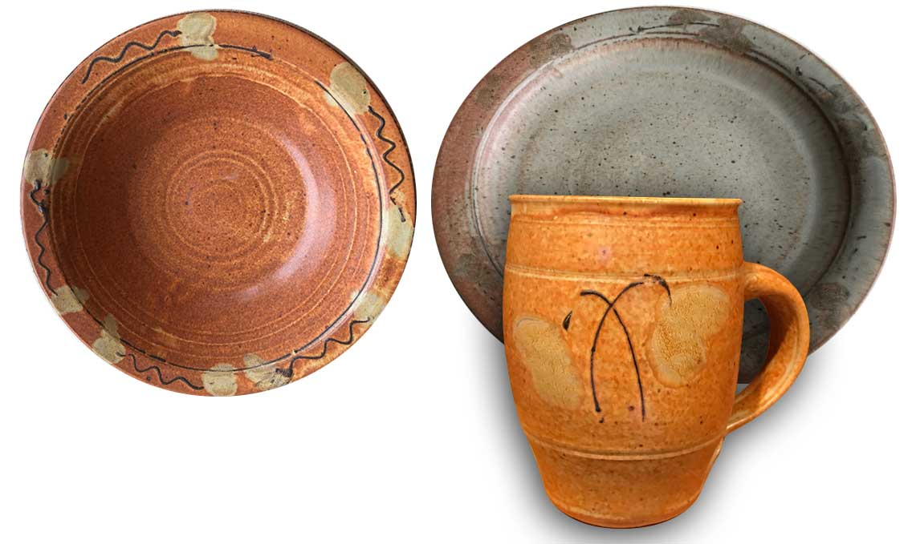

Glaze is Off-Color
Questions to ask and strategies to try in dealing with glazes that do not fire the expected color or have stains or discolored areas
Details
If your fired glaze is not the expected color here are some questions to ask.
Does the development of the color depend on the chemistry of the glaze?
In ceramics, color is about chemistry and melt dynamics, colors do not normally 'burn out'. The development of many colors requires that the host glaze's chemistry be sympathetic. For example chrome-tin pinks require glazes with minimum 10% CaO (calcium oxide) and B2O3 (boric oxide) must be 1/3 or less the CaO content. Certain blues require the presence of BaO (barium oxide). The presence of ZnO (zinc oxide) is hostile to the development of many colors, as is MgO (magnesium oxide). Stain companies know all about this. Their websites and brochures have notations for many of the colors that tell you what chemistry the host needs and what conflicts to watch for. You might even consider phoning their technical staff.
Is there enough color in the glaze? Or too much?
Metal oxide colorants or colorant blends darken glaze color as their proportion is increased. But the change is usually not linear and at some point maximum color is achieved and further additions will often begin to produce metallic, crystalline or matte effects (at this point the glaze can be unstable and leach metals into liquids and may even oxidize in air). The saturation point of a color may also be different in different host glazes.
Is the glaze opacity correct?
The brightness of color also depends on host glaze opacity. Opaque glazes give flatter and lighter colors because you are only seeing the color on the surface, translucent and transparent bases enable you to see down into the glaze (thus the increased depth and vibrancy color).
Is the glaze developing micro-bubbles?
Excessive bubble entrainment in the glaze matrix can alter color considerably. Micro-bubbled transparents become quite cloudy and colors will be subdued, especially if the glaze is transparent and lies over oxide decoration (which might be gassing to create the bubbles).
Is the glaze developing crystals? Does its color depend on the development of crystals?
Crystals grow in some glazes during cooling of the kiln. Certain glaze chemistries and (mineralogies of ingredients) encourage crystal growth (i.e. low alumina, high zinc, too much flux). Cooling the kiln slowly during the period when the glaze is freezing promotes crystal growth. Many of the metal oxides freely participate in crystallization and the range of mineral crystal species they can form is amazing. A high-iron fluid glaze, for example, may fire glossy and almost black on quick cooling, but it may turn a muddy yellow on slow cooling (because the surface is covered with micro-crystals of iron).
Is it a reactive glaze?
The character of a glaze can depend on additives that mottle and variegate the character of the color (i.e. titanium, rutile). Such additives may produce a melt of discontinuous fluidity (rivulets flowing around more viscous areas of the melt). These effects can combine with crystalization and variations in opacity to make stunning surfaces. Alas, such are troublesome. Materials like rutile can be variable and the effects they create are usually fragile. It is easy to predict consistency problems for such mechanisms. Potters can fiddle with reactive glazes, but industry generally stays away from them.
Do the results depend on a fragile melting mechanism?
Is vigorous melting (and running) required to develop the color and character? As noted above, such glazes may not only be prone to color problems, but also running and blistering. Glossy rutile-blues are an example. Another thing to remember is that certain raw colors and stains volatilize (vaporize) above certain temperatures.
Kiln atmosphere, Ramp
The mechanism of color development in a glaze may depend on kiln atmosphere (i.e. strong reduction, weak reduction, strong oxidation), or on the speed or curve of both the ramp up and down. Your kiln may have variations in the atmosphere or your electric kiln might be firing near reduction because of poor airflow combined with carbon burn-off.
Has it been put on the right side of the glaze layer?
The same metal oxide will develop different colors depending or whether it is painted under or over a glaze. If it is painted under, for example, glaze thickness, bubble population, crystal development and chemical interaction between glaze and color will shape the effect.
Would a stain be better?
Achieving and maintaining an exact shade of color can be quite difficult with raw coloring oxides, especially if a blend is being used. For example, many people use cobalt, iron and manganese for black. However color shifts are common with this approach and it is usually not obvious which metal oxide should be increased or reduced to stabilize the color. Stain companies have invested considerable time to develop colors that are reliable and stable (often containing zircon, alumina, silica in addition to the metal oxides). Stains are more expensive, but the stain company assumes a burden that is often difficult for most companies or potters to handle.
Is the glaze the right thickness? On the right body?
Many glazes develop deep color only if they are applied thickly enough. Others develop the desired effect when they are thin and the underlying body imposes some color. Light colored clay bodies foster the development of bright colors, iron bearing bodies subdue colors (especially when the glaze is thin). Many glazes will develop color of different character on refractory porous bodies compared to vitreous ones.
Water Contaminants
It is standard practice to use filtered or distilled water for all glazes in industry. There are so many possible contaminants in water that companies cannot possibly deal with the kind of variation that can occur. Water can contain compounds of iron, sulphur, manganese and a host of sulfates and salts (and even particulates like coal dust). You might conclude that the proportions of these impurities is not sufficient to stain a body or glaze, however it is important to remember that they are soluble. That means that during drying, they are all transported to the surface by evaporating water and left concentrated there in a thin layer that will vary according to the thickness of that section of the piece. This is certainly enough to create a yellowish or brownish tinge, for example. In addition, soluble impurities in the water can and probably will affect the rheological (e.g. viscosity, thixotropy) properties of the glaze slurry. This in turn can cause thinning and settling and separation of the glaze suspension, crystallization of certain materials, thickening, etc. All of these will affect the chemical and physical homogeneity of the glaze laydown and its thickness, these of course, can effect the fired results (which include color).
Conclusion
Try taking a cheap microscope and have a really close look at your glaze surface. You might be surprised at now much you learn about why the glaze looks the way it does. Understanding the mechanism of the color and surface will help you understand how to trouble-shoot problems. It does not take rocket science, anyone can note the transparency, micro-bubbles, crystalization, variegation in color and surface (phase differences), etc. And do not shy away from chemistry, in many cases you just need to know if an oxide is present or not and how much is there. Search for 'ceramic chemistry' on google, download a free trial of INSIGHT and work through the lessons section of the manual to learn how to enter a recipe and see its formula and analysis.
Related Information
Reduction glaze gone astray returns to color in an oxidation refire

This picture has its own page with more detail, click here to see it.
Refired to 1950F. The recipe is very flux-heavy (high feldspar) dolomite:spodumene matte, zero silica, 4% tin oxide and less than 1% iron oxide. Sounds like crystallization territory. The plate on the left is the way it normally fired. On the right the way it started firing. The mug on the bottom looked like the plate on the right, but look what happened after refiring at 1950F in oxidation! The tin is likely a catalyst for the crystallization that occurred in the original result. Could be a fragile mechanism. This underscores the need for a period of oxidation at the end of a normal reduction firing.
 PayPal | No tracking, No ads, No paywall, No transient content! Just organized, concise information constantly updated and improved. Was this helpful? Consider supporting me. |
| By Tony Hansen Follow me on        |  |
Got a Question?
Buy me a coffee and we can talk 

https://digitalfire.com, All Rights Reserved
Privacy Policy